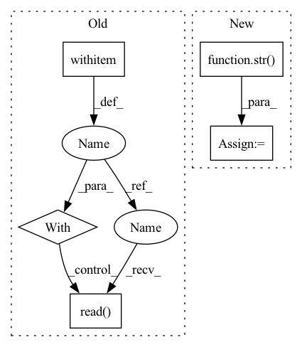

Pattern ID :4186

Before Change
def _generate_examples(self, filepath, labelpath):
Yields examples.
with open(filepath, encoding="utf-8") as f1, open(labelpath, encoding="utf-8") as f2:
src = f1.read().split("\n")[:-1]
tgt = f2.read().split("\n")[:-1]
for idx, (s, t) in enumerate(zip(src, tgt)):
yield idx, {"translation": {self.config.src: s, self.config.tgt: t}}
After Change
]
def _generate_examples(self, archive):
root_dir = _ROOT_DIR[str(self.config.version)]
data_dir = f"{root_dir}/{self.config.src}-{self.config.tgt}"
src = tgt = None
for path, file in archive:
In pattern: SUPERPATTERN
Frequency: 3
Non-data size: 5
Instances
Fragment ID: 15397515
Project Name: huggingface/datasets
Commit Name: f7323d8f691326b18bb07ecc106103dd58f4499d
Time: 2021-12-29
Author: 8515462+albertvillanova@users.noreply.github.com
File Name: datasets/pib/pib.py
M Class Name: Pib
N Class Name: Pib
M Method Name: _generate_examples(2)
N Method Name: _generate_examples(3)
M Parent Class: datasets.GeneratorBasedBuilder
N Parent Class: datasets.GeneratorBasedBuilder
M File Name: datasets/pib/pib.py
N File Name: datasets/pib/pib.py
M Start Line: 147
M End Line: 153
N Start Line: 172
N End Line: 184
'>
Before Change
output_path = str(tmp_path / "extracted.txt")
assert Extractor.is_extractable(input_path)
Extractor.extract(input_path, output_path)
with open(output_path) as f:
extracted_file_content = f.read()
with open(text_file) as f:
expected_file_content = f.read()
assert extracted_file_content == expected_file_content
After Change
if compression_format == "7z":
reason += require_py7zr.kwargs["reason"]
pytest.skip(reason)
input_path = str(input_path)
assert Extractor.is_extractable(input_path)
output_path = tmp_path / ("extracted" if is_archive else "extracted.txt")
Extractor.extract(input_path, output_path)
if is_archive:
'>
Fragment ID: 15397519
Project Name: huggingface/datasets
Commit Name: 44d48a2b12a157a8f5f3b0e114a2884ea0451aea
Time: 2022-07-15
Author: 8515462+albertvillanova@users.noreply.github.com
File Name: tests/test_extract.py
M Class Name: AnonimousClass
N Class Name: AnonimousClass
M Method Name: test_extractor(9)
N Method Name: test_extractor(7)
M Parent Class:
N Parent Class:
M File Name: tests/test_extract.py
N File Name: tests/test_extract.py
M Start Line: 24
M End Line: 33
N Start Line: 40
N End Line: 60
'>
Before Change
super().handle_input(data_type)
filepath = os.path.join(self.artifact.uri, PROFILE_FILENAME)
with fileio.open(filepath, "rb") as f:
protobuf = DatasetProfile.parse_delimited(f.read())[0]
return protobuf
def handle_return(self, profile: DatasetProfile) -> None:
After Change
// Create a temporary folder
temp_dir = tempfile.mkdtemp(prefix="zenml-temp-")
temp_file = os.path.join(str(temp_dir), PROFILE_FILENAME)
// Copy from artifact store to temporary file
fileio.copy(filepath, temp_file)
'>
Fragment ID: 15397523
Project Name: maiot-io/zenml
Commit Name: d90521e30f11b4d501f47777fab7ebe1e70940ef
Time: 2022-07-11
Author: stefan@zenml.io
File Name: src/zenml/integrations/whylogs/materializers/whylogs_materializer.py
M Class Name: WhylogsMaterializer
N Class Name: WhylogsMaterializer
M Method Name: handle_input(2)
N Method Name: handle_input(2)
M Parent Class: BaseMaterializer
N Parent Class: BaseMaterializer
M File Name: src/zenml/integrations/whylogs/materializers/whylogs_materializer.py
N File Name: src/zenml/integrations/whylogs/materializers/whylogs_materializer.py
M Start Line: 45
M End Line: 48
N Start Line: 50
N End Line: 63
'>
Before Change
def _generate_examples(self, filepath, labelpath):
Yields examples.
with open(filepath, encoding="utf-8") as f1, open(labelpath, encoding="utf-8") as f2:
src = f1.read().split("\n")[:-1]
tgt = f2.read().split("\n")[:-1]
for idx, (s, t) in enumerate(zip(src, tgt)):
yield idx, {"translation": {self.config.src: s, self.config.tgt: t}}
After Change
]
def _generate_examples(self, archive):
root_dir = _ROOT_DIR[str(self.config.version)]
data_dir = f"{root_dir}/{self.config.src}-{self.config.tgt}"
src = tgt = None
for path, file in archive:
'>
Fragment ID: 15397527
Project Name: huggingface/datasets
Commit Name: f7323d8f691326b18bb07ecc106103dd58f4499d
Time: 2021-12-29
Author: 8515462+albertvillanova@users.noreply.github.com
File Name: datasets/pib/pib.py
M Class Name: Pib
N Class Name: Pib
M Method Name: _generate_examples(2)
N Method Name: _generate_examples(3)
M Parent Class: datasets.GeneratorBasedBuilder
N Parent Class: datasets.GeneratorBasedBuilder
M File Name: datasets/pib/pib.py
N File Name: datasets/pib/pib.py
M Start Line: 147
M End Line: 153
N Start Line: 172
N End Line: 184